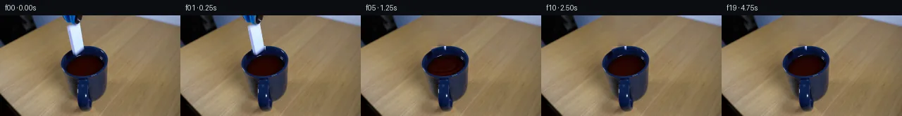

![首帧]()

Round 00
2026-11-05T00:22:10.534035+00:00像素候选变化代码 +192/−0inspection 更新
pixels 60bb0dea508be909 · code d18364b575e3453b
查看本轮 generate.py 真实 diff
--- previous/generate.py
+++ current/generate.py
@@ -0,0 +1,192 @@
+"""Deterministic local photographic pixel animation. No models or 3-D engine."""
+from pathlib import Path
+import json
+import math
+import numpy as np
+import cv2
+from PIL import Image, ImageDraw, ImageFont
+from scipy.ndimage import gaussian_filter
+from artifact_io import save
+
+ROOT=Path(__file__).resolve().parent
+W,H=256,144
+S=4
+SOURCE=np.array(Image.open(ROOT/'first_frame.png').convert('RGB'))
+Y,X=np.mgrid[:H,:W].astype(float)
+
+def polygon_mask(points):
+ canvas=Image.new('L',(W*S,H*S))
+ ImageDraw.Draw(canvas).polygon([(int(x*S),int(y*S)) for x,y in points],fill=255)
+ return np.array(canvas.resize((W,H),Image.Resampling.LANCZOS))/255.
+
+# The masks follow the photographed silhouettes, including their antialiased edges.
+domino_mask=polygon_mask([(95.0,16),(96,13.8),(99,12.5),(112.7,10.5),
+ (119.5,48.1),(118.9,50.1),(108.5,56.7),(105.2,57.4),(103.0,53.8)])
+tool_mask=polygon_mask([(87.2,-2),(117.9,-2),(116.5,4.8),(113.8,10.6),
+ (109.6,13.3),(105.0,12.7),(101.7,11.1),(98.2,10.7),(94.1,10.0),(91.2,6.4)])
+# Fill only the small photographic occlusion. Most of the scene remains exact.
+remove=np.maximum(domino_mask,tool_mask)
+removal=cv2.dilate((remove>.025).astype(np.uint8),np.ones((3,3),np.uint8))
+plate=cv2.inpaint(SOURCE,removal*255,5,cv2.INPAINT_TELEA)
+# Recover the curved rear rim from the visible opposite side of the same mug.
+# Reflection around the opening's slightly tilted symmetry axis.
+cx,cy=120.,66.7
+ang=math.radians(-5)
+xr=cx-math.cos(2*ang)*(X-cx)-math.sin(2*ang)*(Y-cy)
+yr=cy-math.sin(2*ang)*(X-cx)+math.cos(2*ang)*(Y-cy)
+reflected=cv2.remap(SOURCE,xr.astype(np.float32),yr.astype(np.float32),cv2.INTER_CUBIC)
+repair=(removal>0)&(Y>=43.5)&(Y<=59.5)
+plate[repair]=reflected[repair]
+# Tight blend along the local photographic occlusion boundary.
+repair_alpha=np.clip(gaussian_filter(removal.astype(float),.4),0,1)
+plate=np.uint8(np.clip(SOURCE*(1-repair_alpha[:,:,None])+plate*repair_alpha[:,:,None],0,255))
+Image.fromarray(plate).save(ROOT/'.tmp/clean_plate.png')
+
+liquid_mask=polygon_mask([(95.2,75.5),(96.4,71),(99.4,66.5),(104,62.4),
+ (110.0,59.9),(117.0,58.1),(124,57.4),(132,59.1),(139,62.5),(143.9,66.1),
+ (147,70.1),(146.2,73.6),(142.4,78.4),(136.8,81.9),(129.3,84.5),
+ (120.3,86.5),(111.2,86.1),(104.2,84.2),(98.5,80.6)])
+# Soft interior edge makes surface waves disappear at the ceramic wall.
+inside=cv2.distanceTransform((liquid_mask>.5).astype(np.uint8),cv2.DIST_L2,5)
+edge_fade=np.clip(inside/2.,0,1)*liquid_mask
+
+# Photographic source layers are transformed in premultiplied form to avoid halos.
+def object_layer(mask,dx=0,dy=0,angle=0,pivot=(106,30)):
+ matrix=cv2.getRotationMatrix2D(pivot,angle,1.)
+ matrix[:,2]+=np.array([dx,dy])
+ alpha=cv2.warpAffine(mask.astype(np.float32),matrix,(W,H),flags=cv2.INTER_CUBIC)
+ rgb=cv2.warpAffine(SOURCE.astype(np.float32)*mask[:,:,None],matrix,(W,H),flags=cv2.INTER_CUBIC)
+ alpha=np.clip(alpha,0,1)
+ return rgb,alpha
+
+def overlay(frame,rgb,alpha):
+ return frame*(1-alpha[:,:,None])+rgb
+
+# Surface height field from a localized impact with a short, damped wave packet.
+# The y scaling accounts for viewing the horizontal surface at an oblique angle.
+ux=X-113.5
+vy=(Y-69.5)/.49
+radius=np.sqrt(ux*ux+vy*vy)
+
+def surface(frame,t):
+ age=t-.467
+ if age<=0:return frame
+ decay=math.exp(-age/1.05)
+ front=7+age*22
+ wave=1.3*decay*np.sin((radius-front)*.64)*np.exp(-((radius-front)/10.5)**2)
+ # Reflections form mild cavity oscillation after the initial circular front.
+ wave+=.42*decay*np.sin(radius*.58-age*9)*np.exp(-radius/50)*(1-math.exp(-age*5))
+ wave+=.25*decay*np.sin((X-121)*.36+age*6)*np.cos((Y-72)*.55-age*7)
+ if age>3.5:wave*=max(0,(4.28-age)/.78)
+ dy,dx=np.gradient(wave)
+ base=cv2.remap(plate.astype(np.float32),(X+dx*.5).astype(np.float32),
+ (Y+dy*.4).astype(np.float32),cv2.INTER_LINEAR)
+ # Warm highlights and dark troughs from local analytic surface slopes.
+ light=np.clip(-dx*.7-dy*.95,-1.3,1.3)
+ shade=light[:,:,None]*np.array([13,8,4])[None,None,:]
+ foamless=base+shade+wave[:,:,None]*np.array([2.0,.7,.3])
… diff truncated; 105 more lines …